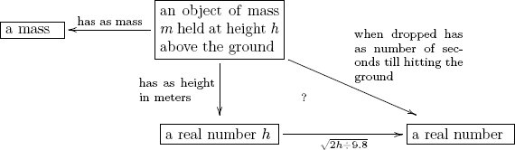
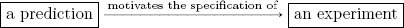

The diagram in Figure 1.1 is intended to evoke thoughts of the scientific method. An observation analyzed by a person yields a hypothesis, which analyzed by a person produces a prediction, which motivates the specification of an experiment, which when executed results in an observation. Its statements look valid, and a good graphic can be very useful for leading a reader through a story that the author wishes to tell. But a graphic has the power to evoke feelings of understanding without really meaning much. The same is true for text: it is possible to use a language like English to express ideas that are never made rigorous or clear. When someone says, “I believe in free will,” what does she believe in? We may all have some concept of what she’s saying—something we can conceptually work with and discuss or argue about. But to what extent are we all discussing the same thing, the thing she intended to convey? Science is about agreement. When we supply a convincing argument, the result of this convincing is agreement. When, in an experiment, the observation matches the hypothesis—success!—that is agreement. When my methods make sense to you, that is agreement. When practice does not agree with theory, that is disagreement. Agreement is the good stuff in science; it is the celebratory moment. But it is easy to think we are in agreement, when we really are not. Modeling our thoughts on heuristics and graphics may be convenient for quick travel down the road, but we are liable to miss our turnoff at the first mile. The danger is in mistaking convenient conceptualizations for what is actually there. It is imperative that we have the ability at any time to ground in reality. What does that mean? Data. Hard evidence. The physical world. It is here that science is grounded and heuristics evaporate. So let’s look again at Figure 1.1. It is intended to evoke an idea of how science is performed. Do hard evidence and data back up this theory? Can we set up an experiment to find out whether science is actually performed according to such a protocol? To do so we have to shake off the impressions evoked by the diagram and ask, What does this diagram intend to communicate? In this book I will use a mathematical tool called ologs, or ontology logs, to give some structure to the kinds of ideas that are often communicated in graphics. Each olog inherently offers a framework in which to record data about the subject. More precisely, it encompasses a database schema, which means a system of interconnected tables that are initially empty but into which data can be entered. For example, consider the following olog:  This olog represents a framework in which to record data about objects held above the ground, their mass, their height, and a comparison (the question mark) between the number of seconds till they hit the ground and a certain real-valued function of their height. Ologs are discussed in detail throughout this book. Figure 1.1 looks like an olog, but it does not conform to the rules laid out for ologs (see Section 2.3). In an olog, every arrow is intended to represent a mathematical function. It is difficult to imagine a function that takes in predictions and outputs experiments, but such a function is necessary in order for the arrow  in Figure 1.1 to make sense. To produce an experiment design from a prediction probably requires an expert, and even then the expert may be motivated to specify a different experiment on Tuesday than he is on Monday. But perhaps this criticism leads to a way forward. If we say that every arrow represents a function when in the context of a specific expert who is actually doing the science at a specific time, then Figure 1.1 begins to make sense. In fact, the figure is reconsidered in Section 7.3 (Example 7.3.3.10), where background methodological context is discussed. This book extols the virtues of a new branch of mathematics, category theory, which was invented for powerful communication of ideas between different fields and subfields within mathematics. By powerful communication of ideas I mean something precise. Different branches of mathematics can be formalized into categories. These categories can then be connected by functors. And the sense in which these functors provide powerful communication of ideas is that facts and theorems proven in one category can be transferred through a connecting functor to yield proofs of analogous theorems in another category. A functor is like a conductor of mathematical truth. I believe that the language and tool set of category theory can be useful throughout science. We build scientific understanding by developing models, and category theory is the study of basic conceptual building blocks and how they cleanly fit together to make such models. Certain structures and conceptual frameworks show up again and again in our understanding of reality. No one would dispute that vector spaces are ubiquitous throughout the sciences. But so are hierarchies, symmetries, actions of agents on objects, data models, global behavior emerging as the aggregate of local behavior, self-similarity, and the effect of methodological context. Some ideas are so common that our use of them goes virtually undetected, such as set-theoretic intersections. For example, when we speak of a material that is both lightweight and ductile, we are intersecting two sets. But what is the use of even mentioning this set-theoretic fact? The answer is that when we formalize our ideas, our understanding is clarified. Our ability to communicate with others is enhanced, and the possibility for developing new insights expands. And if we are ever to get to the point that we can input our ideas into computers, we will need to be able to formalize these ideas first. It is my hope that this book will offer scientists a new vocabulary in which to think and communicate, and a new pipeline to the vast array of theorems that exist and are considered immensely powerful within mathematics. These theorems have not made their way into the world of science, but they are directly applicable there. Hierarchies are partial orders, symmetries are group elements, data models are categories, agent actions are monoid actions, local-to-global principles are sheaves, self-similarity is modeled by operads, context can be modeled by monads. All of these will be discussed in the book. The paradigm shift brought on by Einstein’s theory of relativity led to a widespread realization that there is no single perspective from which to view the world. There is no background framework that we need to find; there are infinitely many different frameworks and perspectives, and the real power lies in being able to translate between them. It is in this historical context that category theory got its start.1 Category theory was invented in the early 1940s by Samuel Eilenberg and Saunders Mac Lane. It was specifically designed to bridge what may appear to be two quite different fields: topology and algebra. Topology is the study of abstract shapes such as 7-dimensional spheres; algebra is the study of abstract equations such as y2z = x3 − xz2. People had already created important and useful links (e.g., cohomology theory) between these fields, but Eilenberg and Mac Lane needed to precisely compare different links with one another. To do so they first needed to boil down and extract the fundamental nature of these two fields. But in doing so, the ideas they worked out amounted to a framework that fit not only topology and algebra, but many other mathematical disciplines as well. At first category theory was little more than a deeply clarifying language for existing difficult mathematical ideas. However, in 1957 Alexander Grothendieck used category theory to build new mathematical machinery (new cohomology theories) that granted unprecedented insight into the behavior of algebraic equations. Since that time, categories have been built specifically to zoom in on particular features of mathematical subjects and study them with a level of acuity that is unavailable elsewhere. Bill Lawvere saw category theory as a new foundation for all mathematical thought. Mathematicians had been searching for foundations in the nineteenth century and were reasonably satisfied with set theory as the foundation. But Lawvere showed that the category of sets is simply one category with certain nice properties, not necessarily the center of the mathematical universe. He explained how whole algebraic theories can be viewed as examples of a single system. He and others went on to show that higher-order logic was beautifully captured in the setting of category theory (more specifically toposes). It is here also that Grothendieck and his school worked out major results in algebraic geometry. In 1980, Joachim Lambek showed that the types and programs used in computer science form a specific kind of category. This provided a new semantics for talking about programs, allowing people to investigate how programs combine and compose to create other programs, without caring about the specifics of implementation. Eugenio Moggi brought the category-theoretic notion of monads into computer science to encapsulate ideas that up to that point were considered outside the realm of such theory. It is difficult to explain the clarity and beauty brought to category theory by people like Daniel Kan and André Joyal. They have each repeatedly extracted the essence of a whole mathematical subject to reveal and formalize a stunningly simple yet extremely powerful pattern of thinking, revolutionizing how mathematics is done. All this time, however, category theory was consistently seen by much of the mathematical community as ridiculously abstract. But in the twenty-first century it has finally come to find healthy respect within the larger community of pure mathematics. It is the language of choice for graduate-level algebra and topology courses, and in my opinion will continue to establish itself as the basic framework in which to think about and express mathematical ideas. As mentioned, category theory has branched out into certain areas of science as well. Baez and Dolan [6] have shown its value in making sense of quantum physics, it is well established in computer science, and it has found proponents in several other fields as well. But to my mind, we are at the very beginning of its venture into scientific methodology. Category theory was invented as a bridge, and it will continue to serve in that role. The world of applied mathematics is much smaller than the world of applicable mathematics. As mentioned, this book is intended to create a bridge between the vast array of mathematical concepts that are used daily by mathematicians to describe all manner of phenomena that arise in our studies and the models and frameworks of scientific disciplines such as physics, computation, and neuroscience. For the pure mathematician I try to prove that concepts such as categories, functors, natural transformations, limits, colimits, functor categories, sheaves, monads, and operads—concepts that are often considered too abstract even for math majors—can be communicated to scientists with no math background beyond linear algebra. If this material is as teachable as I think, it means that category theory is not esoteric but well aligned with ideas that already make sense to the scientific mind. Note, however, that this book is example-based rather than proof-based, so it may not be suitable as a reference for students of pure mathematics. For the scientist I try to prove the claim that category theory includes a formal treatment of conceptual structures that the scientist sees often, perhaps without realizing that there is well-oiled mathematical machinery to be employed. A major topics is the structure of information itself: how data is made meaningful by its connections, both internal and outreaching, to other data.2 Note, however, that this book should certainly not be taken as a reference on scientific matters themselves. One should assume that any account of physics, materials science, chemistry, and so on, has been oversimplified. The intention is to give a flavor of how category theory may help model scientific ideas, not to explain those ideas in a serious way. Data gathering is ubiquitous in science. Giant databases are currently being mined for unknown patterns, but in fact there are many (many) known patterns that simply have not been catalogued. Consider the well-known case of medical records. In the early twenty-first century, it is often the case that a patient’s medical history is known by various doctor’s offices but quite inadequately shared among them. Sharing medical records often means faxing a handwritten note or a filled-in house-created form from one office to another. Similarly, in science there exists substantial expertise making brilliant connections between concepts, but this expertise is conveyed in silos of English prose known as journal articles. Every scientific journal article has a methods section, but it is almost impossible to read a methods section and subsequently repeat the experiment—the English language is inadequate to precisely and concisely convey what is being done. The first thought I wish to convey in this book is that reusable methodologies can be formalized and that doing so is inherently valuable. Consider the following analogy. Suppose one wants to add up the area of a region in space (or the area under a curve). One breaks the region down into small squares, each with area A, and then counts the number of squares, say n. One multiplies these numbers together and says that the region has an area of about nA. To obtain a more precise and accurate result, one repeats the process with half-size squares. This methodology can be used for any area-finding problem (of which there are more than a first-year calculus student generally realizes) and thus it deserves to be formalized. But once we have formalized this methodology, it can be taken to its limit, resulting in integration by Riemann sums. Formalizing the problem can lead to powerful techniques that were unanticipated at the outset. I intend to show that category theory is incredibly efficient as a language for experimental design patterns, introducing formality while remaining flexible. It forms a rich and tightly woven conceptual fabric that allows the scientist to maneuver between different perspectives whenever the need arises. Once she weaves that fabric into her own line of research, she has an ability to think about models in a way that simply would not occur without it. Moreover, putting ideas into the language of category theory forces a person to clarify her assumptions. This is highly valuable both for the researcher and for her audience. What must be recognized in order to find value in this book is that conceptual chaos is a major problem. Creativity demands clarity of thinking, and to think clearly about a subject requires an organized understanding of how its pieces fit together. Organization and clarity also lead to better communication with others. Academics often say they are paid to think and understand, but that is not the whole truth. They are paid to think, understand, and communicate their findings. Universal languages for science, such as calculus and differential equations, matrices, or simply graphs and pie charts, already exist, and they grant us a cultural cohesiveness that makes scientific research worthwhile. In this book I attempt to show that category theory can be similarly useful in describing complex scientific understandings. The only way to learn mathematics is by doing exercises. One does not get fit by merely looking at a treadmill or become a chef by merely reading cookbooks, and one does not learn math by watching someone else do it. There are about 300 exercises in this book. Some of them have solutions in the text, others have solutions that can only be accessed by professors teaching the class. A good student can also make up his own exercises or simply play around with the material. This book often uses databases as an entry to category theory. If one wishes to explore categorical database software, FQL (functorial query language) is a great place to start. It may also be useful in solving some of the exercises. I wrote this book because the available books on category theory are almost all written for mathematicians (the rest are written for computer scientists). One book, Conceptual Mathematics by Lawvere and Schanuel [24], offers category theory to a wider audience, but its style is not appropriate for a course or as a reference. Still, it is very well written and clear. The bible of category theory is Categories for the Working Mathematician by Mac Lane [29]. But as the title suggests, it was written for working mathematicians and would be opaque to my target audience. However, once a person has read the present book, Mac Lane’s book may become a valuable reference. Other good books include Awodey’s Category theory [4], a recent gentle introduction by Simmons [37], and Barr and Wells’s Category Theory for Computing Science, [11]. A paper by Brown and Porter, ‘‘Category Theory: an abstract setting for analogy and comparison” [9] is more in line with the style of this book, only much shorter. Online, I find Wikipedia [46] and a site called nLab [34] to be quite useful. This book attempts to explain category theory by examples and exercises rather than by theorems and proofs. I hope this approach will be valuable to the working scientist. __________________ 1The following history of category theory is far too brief and perhaps reflects more of the author’s aesthetic than any kind of objective truth. References are Kromer [19], Marquis [30], and Landry and Marquis [22]. 2The word data is generally considered to be the plural form of the word datum. However, individual datum elements are only useful when they are organized into structures (e.g., if one were to shuffle the cells in a spreadsheet, most would consider the data to be destroyed). It is the whole organized structure that really houses the information; the data must be in formation in order to be useful. Thus I use the word data as a collective noun (akin to sand); it bridges the divide between the individual datum elements (akin to grains of sand) and the data set (akin to a sand pile).Chapter 1
Introduction
1.1 A brief history of category theory
1.2 Intention of this book
1.3 What is requested from the student
1.4 Category theory references